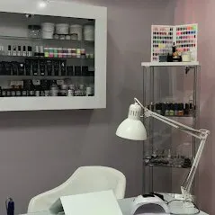

2 · Gün ve saat
Önümüzdeki 7 gün
SeçiliSüre devamıDolu (örnek)
Hizmet seçin, sonra bir saat işaretleyin.

Hizmetleri seçin; defter süreye göre boş saatleri gösterir. Doluluk örnektir, gerçek takvim değildir. Seçiminiz hazır mesaja dönüşür, siz gönderirsiniz.